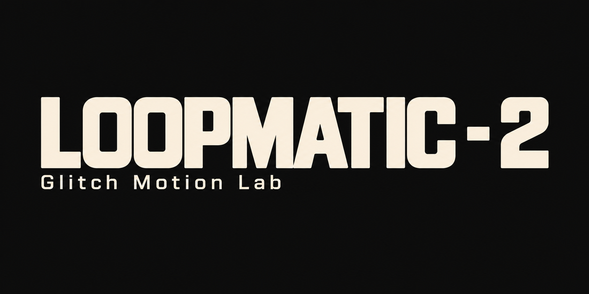
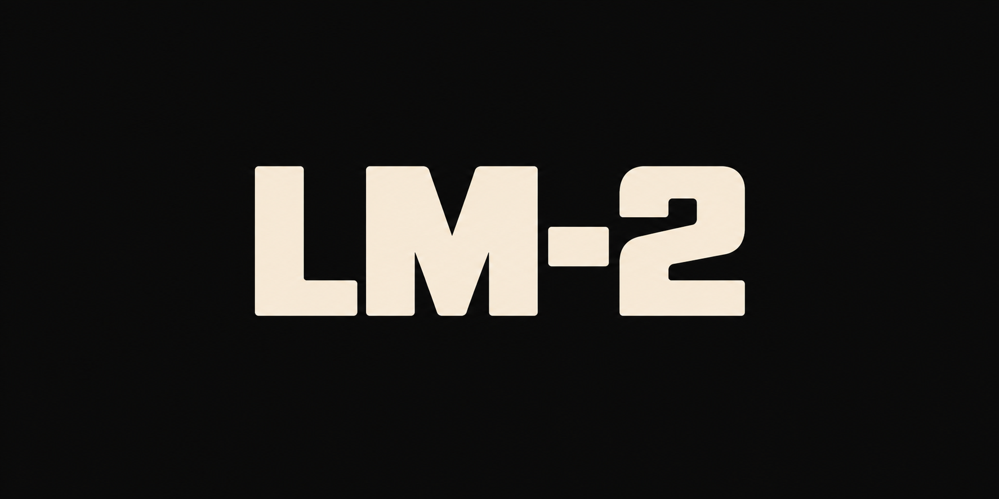

01 / VIEWFINDER
640 × 360FRAME — / —
+
O movimento começa
com um quadro.
Arraste imagens para esta tela
ou selecione os arquivos abaixo.
● LIVE OUTPUT 5.0 FPS
02 / FILM STRIP
0 selecionados
Marque os quadros • Shift seleciona um intervalo • arraste para reordenarDeslize para navegar • arraste pela alça ↔ para reordenar • marque para mover vários
Arraste imagens para este painel • ordem numérica pelo nome
03 / FRAME STUDIOEDIÇÃO NO QUADRO SELECIONADO
Seta: selecione e arraste textos ou imagens. Edição sem efeitos; reprodução e exportação com efeitos.